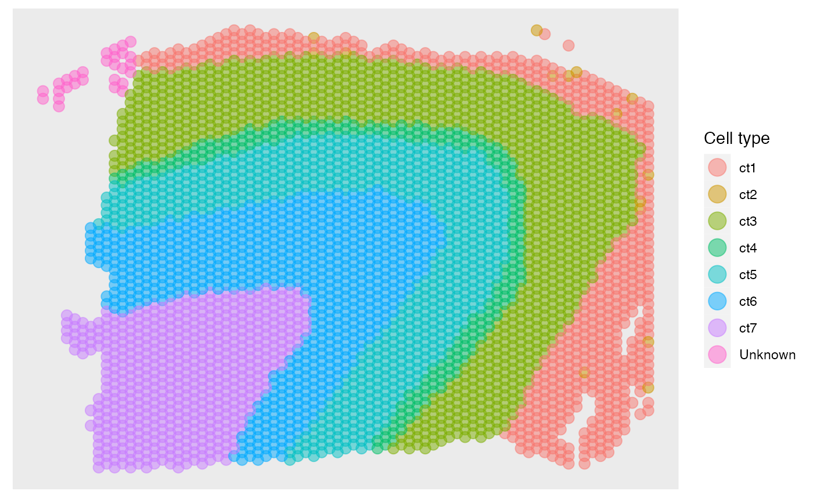
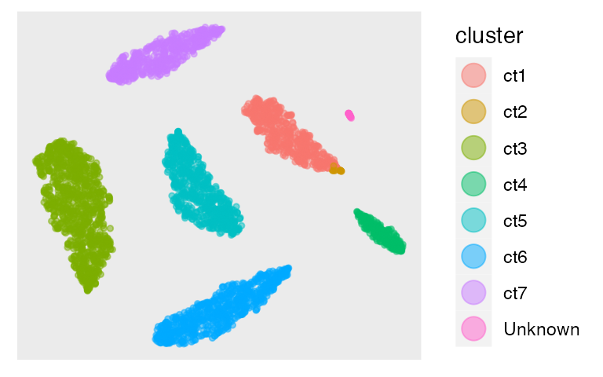
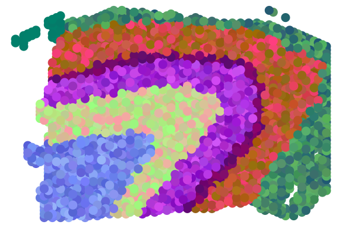

SpatialAnno.RmdThis vignette provides an introduction to the R package SpatialAnno, where the function SpatialAnno implements the model SpatialAnno, an efficient and accurate annotation method for spatial transcriptomics datasets, with the capability of effectively leveraging a large number of non-marker genes with “qualitative” information about marker genes, without using a reference dataset. The package can be installed with the command:
install_github("Shufeyangyi2015310117/SpatialAnno")
The package can be loaded with the command:
library("SpatialAnno")We first set the basic parameter. The spatial locations of 3639 spots were taken from DLPFC section 151673. Cell types are assigned with the manually annotations from the original studies. It contains 7 cell types and some “Unknown”. The number of markers for each cell type is set to 4.
set.seed(100)
library(mvtnorm)
library(SingleCellExperiment)
library(splatter)
dlpfc = readRDS(file = paste0(path.package("SpatialAnno"),"/extdata/151673.rds"))
pos = colData(dlpfc)[,c("row", "col")]
n <- dim(dlpfc)[2] # number of spots
p <- 200 ## number of non-markers
y <- as.numeric(colData(dlpfc)[,c("layer_guess_reordered")])
y[is.na(y)] = 8
y2 <- paste0("ct", y)
y2[y2=="ct8"] = "Unknown"
K <- length(table(y)) -1 ## number of clusters
num_mk_per_ct = 5 ## number of markers per cell type
m <- num_mk_per_ct * K ## number of markersThen we define the function that can generate raw count. We simulated gene expression for each spot using the splatter package. The parameter for the proportion of DEGs (de.prob) in each layer was set as 0.5. The DE strength is determined by both mean parameter de.facloc and scale parameter de.facScale, the former ranges from 0.1 to 0.8 and the latter was set within [0.1,1], corresponding to the log fold change in expression from one-fold to two-fold across different types. All the other parameters are set based on their estimates in the seven layers from DLPFC section 151673.
generate_count <- function(J = 100, de_facLoc = 0, de_facScale = 1){
dlpfc = readRDS(file = paste0(path.package("SpatialAnno"),"/extdata/151673.rds"))
n <- dim(dlpfc)[2] # number of spots
p <- 2000 ## number of non-markers
y <- as.numeric(colData(dlpfc)[,c("layer_guess_reordered")])
y[is.na(y)] = 8
dec <- scran::modelGeneVar(dlpfc)
top <- scran::getTopHVGs(dec, n = 2000)
cnts = as.matrix(counts(dlpfc)[top,])
init_params <- splatEstimate(cnts)
num_mk_per_ct = 5
batch_facLoc = 0
C = 8
I = NULL
N = 7000
L = 1
de_prop = rep(0.5,8)
debug = FALSE
# 1.simulate count data
noBatch <- ifelse(batch_facLoc == 0, TRUE, FALSE)
group_prob <- as.vector(table(y)/length(y))
params <- setParams(
init_params,
batchCells = rep(N, L), # 3N here represents a large number such that
# we have sufficient cells of each type to be
# allocated to the spatial transcriptomics data
batch.rmEffect = noBatch,
batch.facLoc = batch_facLoc,
nGenes = J,
group.prob = group_prob,
out.prob = 0,
de.prob = de_prop,
de.facLoc = de_facLoc,
de.facScale = de_facScale)
sim_groups <- splatSimulate(
params = params,
method = "groups",
verbose = FALSE)
library(Seurat)
library(scuttle)
sim_groups <- logNormCounts(sim_groups)
seu = as.Seurat(sim_groups)
seu = SCTransform(seu, assay = "originalexp")
Idents(seu) = seu@meta.data$Group
all.markers = FindAllMarkers(seu, assay = "SCT", logfc.threshold = 0.1)
library(dplyr)
all.markers %>%
group_by(cluster) %>%
top_n(n = num_mk_per_ct, wt = avg_log2FC) -> top5
out = list(top5 = top5, sim_groups = sim_groups, all.markers = all.markers)
return(out)
}Five marker genes for each cell type were selected from the top DEGs based on log-fold change.
res1 = generate_count(J = 100, de_facLoc = c(1,2,3,4,5,6,7,8)*0.1, de_facScale = c(0.1,0.1,1,0.1,1,1,0.10,0.1))
res2 = generate_count(J = p, de_facLoc = c(1,2,3,4,5,6,7,8)*0.1, de_facScale = c(0.1,0.1,1,0.1,1,1,0.10,0.1))
res1$all.markers %>%
group_by(cluster) %>%
top_n(n = 15, wt = avg_log2FC) -> top15
adjusted_top5_gene = top15$gene[c(1:5,16:20,31:35,46:50,61:65,76:80,91:95)]
##################################1:5,16:20,31:35,46:50,61:65,76:80,91:95
### c(11:15,26:30,31:35,56:60,61:65,86:90,101:105)
## reorder the sample to be matched with y
Groupy = paste0("Group", y)
num_each_celltype = table(y)
idx1 = rep(0, length(y))
for (i in 1:8){
idx1[y==i] = which(colData(res1$sim_groups)[,3] == paste0("Group",i))[1:num_each_celltype[i]]
}
idx2 = rep(0, length(y))
for (i in 1:8){
idx2[y==i] = which(colData(res2$sim_groups)[,3] == paste0("Group",i))[1:num_each_celltype[i]]
}
## ordered samples
X1 = counts(res1$sim_groups)[unique(adjusted_top5_gene),idx1]
rownames(X1) = gsub("Gene","mk", rownames(X1))
X2 = counts(res2$sim_groups)[,idx2]
colsum = apply(X2,1,sum)
if (min(colsum) == 0){
idx_not_equal_zero = which(colsum!=0)
X2 = X2[idx_not_equal_zero,]
}
## generate rho
rho <- matrix(0, dim(X1)[1], K+1)
rownames(rho) <- gsub("Gene","mk", rownames(X1))
colnames(rho)[1:(K+1)] <- paste0("ct", 1:(K+1))
colnames(rho)[K+1] <- "Unknown"
res1_top5_gene = gsub("Gene","mk", adjusted_top5_gene)
for (k in 1:K) {
rho[res1_top5_gene[((k-1)*num_mk_per_ct + 1):(k*num_mk_per_ct)], k] <- 1
}
## define markers
marker = list()
for (k in 1:K){
marker[[k]] = rownames(rho)[rho[,k]==1]
names(marker)[k] = colnames(rho)[k]
}Then we construct the sce object and perform the normalization on simulated data using function logNormCounts implemented in the R packages scran
# -------------------------------------------------
# make BayesSpace metadata used in BayesSpace
counts <- rbind(X1, X2)
## Make array coordinates - filled rectangle
cdata <- list()
cdata$row <- pos[,1]
cdata$col <- pos[,2]
cdata <- as.data.frame(do.call(cbind, cdata))
cdata$imagerow <- cdata$row
cdata$imagecol <- cdata$col
## Make SCE
## note: scater::runPCA throws warning on our small sim data, so use prcomp
sce <- SingleCellExperiment(assays=list(counts=counts), colData=cdata)
sce$spatial.cluster <- floor(runif(ncol(sce), 1, 3))
metadata(sce)$BayesSpace.data <- list()
metadata(sce)$BayesSpace.data$platform <- "Visium"
metadata(sce)$BayesSpace.data$is.enhanced <- FALSE
sce <- logNormCounts(sce)
X = as.matrix(t(logcounts(sce)))Then we find the neighborhoods using the function find_neighbors2 implemented in our package SpatialAnno, with specifying the type of platform as Visium, as DLPFC 151673 was sequenced on the platform 10x Genomics Visium. After obtaining the sparse neighborhoods matrix Adj_sp, we can run SpatialAnno with normalized gene expression matrix X, sparse neighborhoods matrix Adj_sp, and a list of markers marker. Note that we choose the initial value from annotation methods scSorter due to low-dimensional non-markers.
Adj_sp = find_neighbors2(sce, platform = "Visium")
fit <- SpatialAnno(X = X, Adj_sp = Adj_sp, marker = marker, initial = "scSorter")## [1] "mk22" "mk23" "mk38" "mk40" "mk44"
## [1] "mk11" "mk23" "mk38" "mk40" "mk41"
## [1] "mk14" "mk48" "mk56" "mk58" "mk88"
## [1] "mk19" "mk54" "mk55" "mk73" "mk92"
## [1] "mk10" "mk49" "mk61" "mk69" "mk87"
## [1] "mk20" "mk33" "mk34" "mk46" "mk63"
## [1] "mk1" "mk38" "mk5" "mk73" "mk93"
## iter = 2, loglik= -1467207.486145, dloglik=0.999317
## iter = 3, loglik= -1160303.555200, dloglik=0.209176
## iter = 4, loglik= -1159056.221116, dloglik=0.001075
## iter = 5, loglik= -1158311.122888, dloglik=0.000643
## iter = 6, loglik= -1157758.472042, dloglik=0.000477
## iter = 7, loglik= -1157421.496115, dloglik=0.000291
## iter = 8, loglik= -1157232.511740, dloglik=0.000163
## iter = 9, loglik= -1157118.927866, dloglik=0.000098
## iter = 10, loglik= -1157042.299173, dloglik=0.000066
## iter = 11, loglik= -1156985.611640, dloglik=0.000049
## iter = 12, loglik= -1156941.352391, dloglik=0.000038
## iter = 13, loglik= -1156905.571381, dloglik=0.000031
## iter = 14, loglik= -1156875.913760, dloglik=0.000026
## iter = 15, loglik= -1156849.423535, dloglik=0.000023
## iter = 16, loglik= -1156828.276321, dloglik=0.000018
## iter = 17, loglik= -1156810.074081, dloglik=0.000016
## iter = 18, loglik= -1156794.243516, dloglik=0.000014
## iter = 19, loglik= -1156780.356645, dloglik=0.000012
## iter = 20, loglik= -1156768.083772, dloglik=0.000011
## iter = 21, loglik= -1156757.166083, dloglik=0.000009
## iter = 22, loglik= -1156747.397225, dloglik=0.000008
## iter = 23, loglik= -1156738.610441, dloglik=0.000008
## iter = 24, loglik= -1156730.669374, dloglik=0.000007
## iter = 25, loglik= -1156723.461371, dloglik=0.000006
## iter = 26, loglik= -1156716.892517, dloglik=0.000006
## iter = 27, loglik= -1156710.883883, dloglik=0.000005
## iter = 28, loglik= -1156705.368664, dloglik=0.000005
## iter = 29, loglik= -1156700.289947, dloglik=0.000004
## iter = 30, loglik= -1156695.598959, dloglik=0.000004
## iter = 31, loglik= -1156691.253683, dloglik=0.000004
## iter = 32, loglik= -1156687.217739, dloglik=0.000003
## iter = 33, loglik= -1156683.459482, dloglik=0.000003
## iter = 34, loglik= -1156679.951272, dloglik=0.000003
## iter = 35, loglik= -1156676.668865, dloglik=0.000003
## iter = 36, loglik= -1156673.590924, dloglik=0.000003
## iter = 37, loglik= -1156670.698595, dloglik=0.000003
## iter = 38, loglik= -1156667.975172, dloglik=0.000002
## iter = 39, loglik= -1156665.405799, dloglik=0.000002
## iter = 40, loglik= -1156662.977230, dloglik=0.000002
## iter = 41, loglik= -1156660.677619, dloglik=0.000002
## iter = 42, loglik= -1156658.209368, dloglik=0.000002
## iter = 43, loglik= -1156656.140278, dloglik=0.000002
## iter = 44, loglik= -1156654.172656, dloglik=0.000002
## iter = 45, loglik= -1156652.297414, dloglik=0.000002
## iter = 46, loglik= -1156650.507371, dloglik=0.000002
## iter = 47, loglik= -1156648.796098, dloglik=0.000001
## iter = 48, loglik= -1156647.157781, dloglik=0.000001
## iter = 49, loglik= -1156645.587138, dloglik=0.000001
## iter = 50, loglik= -1156644.079361, dloglik=0.000001
## iter = 51, loglik= -1156642.630064, dloglik=0.000001
## iter = 52, loglik= -1156641.235236, dloglik=0.000001
## iter = 53, loglik= -1156639.891206, dloglik=0.000001
## iter = 54, loglik= -1156638.594606, dloglik=0.000001
## iter = 55, loglik= -1156637.342342, dloglik=0.000001
## iter = 56, loglik= -1156636.131571, dloglik=0.000001
## iter = 57, loglik= -1156634.959674, dloglik=0.000001
## iter = 58, loglik= -1156633.824237, dloglik=0.000001We demonstrate the output of SpatialAnno, which is a list contains many items. We will explain them one by one in the following part.
str(fit)## List of 13
## $ R : num [1:3639, 1:8] 3.46e-52 1.00 3.74e-23 1.42e-48 1.15e-65 ...
## $ xi : num 2.5
## $ type : int [1:3639, 1] 3 1 7 3 5 6 7 3 1 6 ...
## $ alpha_m: num [1:30, 1] 1.83 2.87 2.34 3.33 2.98 ...
## $ bet_m : num [1:30, 1:8] 1.4 1.16 2.58 1.5 1.13 ...
## $ mu_m : num [1:30, 1:8] 3.23 4.02 4.92 4.83 4.1 ...
## $ sigma_m: num [1:30, 1] 1.88 1.76 1.76 1.57 1.74 ...
## $ Ez_u : num [1:3639, 1:15] 8.2 10.11 13.38 8.06 7.23 ...
## $ Mu_u : num [1:8, 1:15] 9.59 5.01 8.23 10.59 7.53 ...
## $ Sgm_u : num [1:15, 1:15] 4.017 0.445 2.513 0.983 -3.627 ...
## $ W_u : num [1:200, 1:15] 0.0785 -0.0292 0.0496 0.0211 0.0439 ...
## $ Lam_u : num [1:200, 1] 0.738 0.833 0.709 0.617 0.971 ...
## $ loglik : num [1:57] -2.15e+09 -1.47e+06 -1.16e+06 -1.16e+06 -1.16e+06 ...SpatialAnno.The predictions can be obtained in the following way. Then we can plot the annotation results of SpatialAnno on the original positions using R package ggplot2
## [1] "ct3" "ct1" "ct7" "ct3" "ct5" "ct6" "ct7" "ct3" "ct1" "ct6" "ct7" "ct4"
## [13] "ct5" "ct3" "ct5" "ct3" "ct6" "ct5" "ct1" "ct6"
library(ggplot2)
fit_type = colnames(rho)[fit$type]
pos[,1] = -pos[,1]
dat = data.frame(pos[,1], pos[,2], factor(fit_type))
names(dat)= c("imagerow", "imagecol", "Cell type")
p1 <- ggplot(dat, aes(x=imagerow, y=imagecol, color=`Cell type`)) +
geom_point(size = 3, alpha = 0.5) +
theme(axis.text.x = element_blank(),
axis.text.y = element_blank(),
axis.title.x = element_blank(),
axis.title.y = element_blank(),
panel.grid.major = element_blank(),
panel.grid.minor = element_blank(),
panel.border = element_blank(),
axis.ticks = element_blank())+
guides(colour = guide_legend(override.aes = list(size = 5)))
p1
After obtaining the predictions, we can calculate Kappa, mF1 (mean F1), and acc to evalute the performance of annotation results by SpatialAnno. The function cohen.kappa to calculate Kappa is implemented in the package psych. The function evaluate to calculate mF1 is implemented in our package SpatialAnno. The Kappa is
library(psych)
idx = which(y2!="Unknown" & prediction!="Unknown")
Kappa = cohen.kappa(x = cbind(y2[idx], prediction[idx]))$kappa
print(Kappa)## [1] 0.9140835The mF1 is
## [1] 0.8183227The acc is
## [1] 0.9296594Then we extract the embeddings from the output of SpatialAnno, and plot the tSNE and calculate ARI with the function adjustedRandIndex implemented in the R package mclust
## [,1] [,2] [,3] [,4] [,5] [,6] [,7]
## [1,] 8.200934 4.476067 11.438057 4.497795 -14.71717 2.2841504 4.460064
## [2,] 10.114228 2.842798 13.357539 4.504574 -14.94004 2.7476946 10.643506
## [3,] 13.383633 2.318947 10.986487 4.481825 -15.31096 1.8013694 7.769313
## [4,] 8.064062 3.235666 10.708896 4.696581 -12.87674 3.0176053 4.083591
## [5,] 7.234133 1.561023 9.402078 4.409085 -14.87095 7.3525165 9.731576
## [6,] 6.485527 2.379345 13.300804 5.590139 -12.80716 -0.9256822 4.942769
## [,8] [,9] [,10] [,11] [,12] [,13] [,14]
## [1,] -18.60973 -0.4446807 -1.3097434 1.0922510 5.741625 -16.821980 -9.101355
## [2,] -25.92402 -0.7540642 -0.3209393 2.2472831 2.485593 -8.610126 -4.234882
## [3,] -29.58129 -7.8842991 0.6316807 -0.8186432 3.486277 -9.289701 -6.595325
## [4,] -16.73786 -0.5455508 -1.0143665 0.3906326 2.974831 -17.350978 -6.723654
## [5,] -21.72303 1.6026990 -7.1421597 -7.9475153 3.997371 -4.172060 -4.402423
## [6,] -19.11774 -5.3660077 -8.2743829 5.6032033 -2.765648 -3.087866 -5.903869
## [,15]
## [1,] -4.5227073
## [2,] -3.9502406
## [3,] -3.4842198
## [4,] -2.7758946
## [5,] -0.8484403
## [6,] -2.0439957
tsne = calculateTSNE(t(as.matrix(embedding)))The tSNE plot is
dat = as.data.frame(tsne)
colnames(dat) = c("X", "Y")
dat$cluster = prediction
library(ggplot2)
p1 <- ggplot(dat, aes(x=X, y=Y, color=cluster)) +
geom_point(size = 1, alpha = 0.5) +
theme(axis.text.x = element_blank(),
axis.text.y = element_blank(),
axis.title.x = element_blank(),
axis.title.y = element_blank(),
panel.grid.major = element_blank(),
panel.grid.minor = element_blank(),
panel.border = element_blank(),
axis.ticks = element_blank())+
guides(colour = guide_legend(override.aes = list(size = 5), ncol=1))
p1
Then we perform the clustering analysis with GMM on embedding and calculate ARI. The ARI is
fit2 = Mclust(embedding, G = 3:10)
ARI = adjustedRandIndex(y, fit2$classification)
print(ARI)## [1] 0.6971748We can also plot RGB plot with the function plot_RGB implemented in PRECAST. The RGB plot is demonstrated as follows
library(PRECAST)
tsne3dim = calculateTSNE(t(embedding), ncomponents = 3)
pList <- plot_RGB(pos, tsne3dim, pointsize = 2)
pList